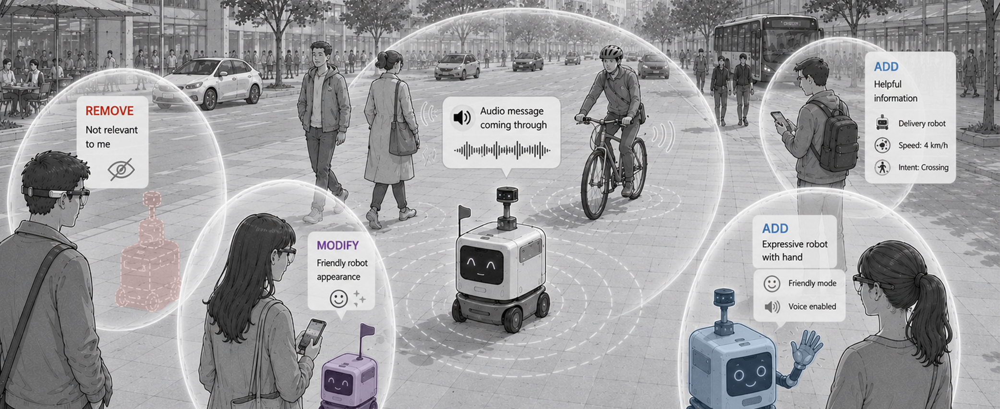

I work toward calibrated human-AI interaction.
Embodied AI, such as automated vehicles and service robots, increasingly acts in everyday life. These systems could make roads safer, give mobility to people who cannot drive, and take over tedious work. However, their effectiveness, people’s acceptance, and safe use often depend on human experience, such as trust, mental workload, and perceived safety.
These experiences can have an appropriate range. This range may depend on the person, the AI, and the situation. For instance, human experience can be inappropriate to the AI’s actual capabilities, as in undertrust or overtrust. The AI’s behavior can also be inappropriate to the person’s preferences, as in a driving style that feels too aggressive or a service robot that approaches too closely.
Interfaces that mediate (add, remove, or modify) information might calibrate human-AI interaction. However, people differ, so one design typically cannot serve everyone. In addition, people and AI change. A person may learn how the AI behaves, and the AI’s capabilities may change with each software update.
